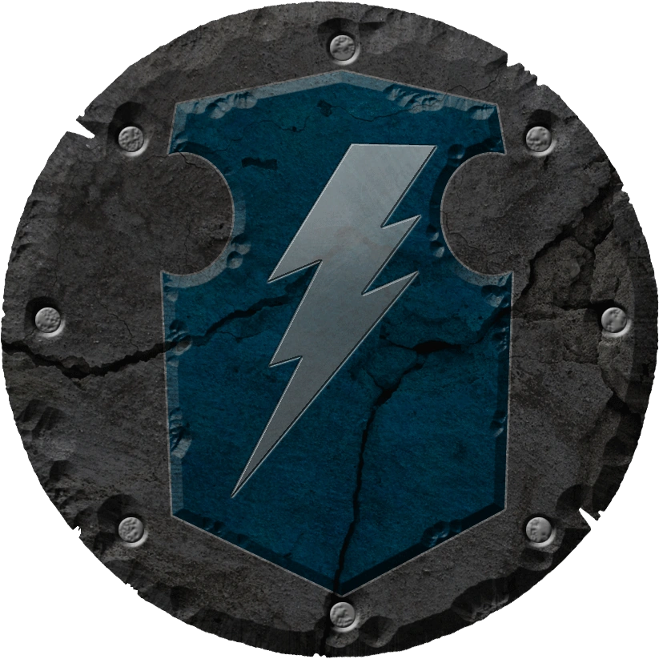

Storm Wardens
| Storm Wardens | |
|---|---|
 Heraldry of the Storm Wardens Artwork © Games Workshop | |
| Founding | Unknown; records destroyed or sealed after the Nemesis Incident (c. 945.M36). See List of Space Marine Foundings |
| Progenitor | Unknown; the Chapter's descent from a primarch was concealed with its records |
| Homeworld | Sacris, a Forbidden world (formerly a Feral world), Calixis Sector, Segmentum Obscurus |
| Fortress-monastery | Highcastle, the moon of Sacris |
| Chapter Master | Ward-Master Lorgath Maclir (629.M41 – present) |
| Allegiance | Imperium of Mankind |
| Colours | Blue and silver |
| Notable battles | |
| Nemesis Incident (c. 945.M36), Cleansing of Vigil, Operation Hammerfall (777.M41), Liberation of Colhep (789.M41), Achilus Crusade | |
The Storm Wardens are a Space Marine Chapter of the Adeptus Astartes that keeps to the Calixis Sector and the Halo Stars beyond it, in the Segmentum Obscurus. They follow the Codex Astartes closely, but their gene-seed and Founding are not known: the Chapter lost its oldest records in the Nemesis Incident of c. 945.M36, and has never recovered them.[1]
Their homeworld, Sacris, is classed by the Adeptus Terra as a Forbidden world and is guarded by automated beacons and Chapter warships that open fire without warning. Few officials in the sector know that a Chapter lives there. Those who have fought beside the Storm Wardens describe them as stoic, insular and grimly proud, and the Chapter takes its manner from the warrior clans of Sacris.[1]
History
[edit]The Nemesis Incident
[edit]In c. 945.M36, during the Age of Apostasy, the Storm Wardens joined agents of the Inquisition against an infestation of Enslavers, psychic parasites of the Warp, in the Steropes Cluster. Chapter Master Owin Glendwyr took the field with the Veteran 1st Company, and three worlds were cleansed before an Inquisitor Lord of the Ordo Xenos declared Exterminatus on seven more. What the Storm Wardens found in the black ruins of the cluster is not recorded.[1][a]
Imperial accounts agree that the company returned to Sacris tainted. Glendwyr consulted the Inquisitor Lord and, by authority of the High Lords of Terra, sealed much of the fortress-monastery. He and the entire 1st Company were placed in hidden stasis vaults, to wait until a cure was found. The Chapter's records of its Founding and progenitor were destroyed or walled away, and Sacris was closed to the wider Imperium. The Chapter's Dreadnoughts guard the vaults under a vow of silence.[1]
The Inheritors and the Halo Stars
[edit]After the incident the Storm Wardens rebuilt their 1st Company from new battle-brothers, who call themselves the Inheritors and hold the Chapter's honour until their predecessors wake. Beacons around Sacris still broadcast a false warning of plague, a deception ordered by Glendwyr and kept by every Chapter Master since. In the 41st millennium the Chapter garrisoned the frontier worlds near the Halo Stars, where Warp storms bring xenos raiders and Chaos renegades.[1]
Wars of the 41st millennium
[edit]In 331.M41 the strike cruiser Eternal Sentinel was ambushed in the Maw by a Chaos warfleet emerging from a Warp interface that Imperial augurs could not identify. In 777.M41 the Chapter sent seven companies to the opening battles of the Achilus Crusade under the name Operation Hammerfall, the largest contribution of any Chapter. In 784.M41 three companies accompanied the Rogue Trader Tyral Cathek into the Halo Stars on a voyage that ended in the razing of several isolated realms; in 789.M41 a company freed the Colhep systems from alien enslavement in a single week.[1] Undated actions include the defeat of the Ork Warboss Kraazgrug on Keffik's World and the Cleansing of Vigil, a close-quarters war in the tunnels of a dead world against the Slaugth.
Organisation and beliefs
[edit]The Chapter recruits from the clans of Sacris, whose warriors believe the Emperor is a stern father who judges men by strength at arms and the keeping of their word. Aspirants run a trial through swamp gas, leeches and quicksand, then compete in games of arms on the moors. Those who pass receive a Sacris claymore, which is returned to the clan if the Marine dies.[1]
The Chapter's veteran ideal is the Tempest Blade, a warrior who has won the regard of the whole Chapter and who inherits the name, teaching and often the wargear of a named predecessor. Tempest Blades seek the strongest enemy in every battle and fight it alone, and they study the Lexicon Heroica, a record of heroes whose earliest volumes lie in the sealed vaults. They hold that a warrior learns his limit at the moment of death, and so honour Dreadnoughts as men who have returned from it.[1]
Notable members
[edit]- Lorgath Maclir, Ward-Master, initiated in 229.M41 and raised to command in 629.M41; Imperial Commander of Sacris and a diligent student of the Tactica Imperialis.
- Owin Glendwyr, Chapter Master at the time of the Nemesis Incident; in stasis since.
- Kynar Half-Hand, Captain of the 7th Company, who came to the Jericho Reach with the vanguard of the Achilus Crusade.
- Tarran Cearr, Watch Captain of the Deathwatch at Watch Fortress Erioch, who is quietly seeking the truth of the Nemesis Incident despite Inquisitorial prohibition.
- Brand Mac Lir, Watch Captain, famed at the Cleansing of Vigil and bearer of the Sacris claymore Morwenna.
Timeline
[edit]| Date | Event |
|---|---|
| c. 945.M36 (estimated) | Nemesis Incident in the Steropes Cluster; 1st Company and Chapter Master Glendwyr placed in stasis |
| 229.M41 | Lorgath Maclir initiated |
| 331.M41 | Strike cruiser Eternal Sentinel ambushed in the Maw |
| 629.M41 | Maclir becomes Ward-Master |
| 777.M41 | Operation Hammerfall, Achilus Crusade |
| 784.M41 | Destroyer's Last Crusade into the Halo Stars |
| 789.M41 | Liberation of Colhep |
| 801.M41 | Battle of Port Mad Dog |
| 808.M41 | Investigation of Rain in the Halo Stars |
| 815.M41 | Strike cruiser Glendwyr's Lament rescues a Navigator from Belami |
See also
[edit]
Notes
[edit]- ^ The date is an estimate. The Chapter's own sacred history, the Liber Tempest, survives in several versions that disagree, and the Chapter's Librarians chose one as true after a study lasting about a century.